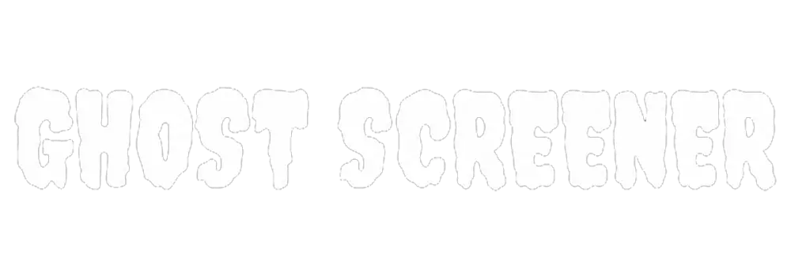
Every blockchain has ghosts. Not the ones that haunt abandoned wallets—but the invisible traders who always seem to arrive before everyone else.
Before a token trends, before influencers start posting, and before the candles turn green, there are mysterious wallets quietly accumulating in the shadows. They move without attention, leave only footprints on-chain, and disappear before the crowd even knows what happened. Every trader has asked the same question: "How did they find it so early?"
That question gave birth to GHOSTSCREENER.
Inspired by crypto's obsession with finding hidden alpha, tracking smart money, and discovering the next gem before the rest of the market, GHOSTSCREENER ($GHOST) represents the spirit of every degen searching for opportunities that nobody else can see. Not because it predicts the future.
In the world of crypto, the biggest opportunities don't announce themselves.
They appear silently...
And vanish just as fast.
Stay Spooky. Stay Early. 👻
GHOSTSCREENER was never just about charts. The charts are only the surface. The real mission is uncovering what hides beneath them—the silent wallets, the smart money, the hidden gems, and the opportunities that most people never notice until it's too late.
Every bull run creates legends.
Not because people bought at the top.
But because someone found the opportunity while it was still invisible.
That's the spirit of $GHOST.
This isn't about pretending to predict the future.
This isn't about guaranteeing profits.
This isn't another serious trading platform. $GHOST is a memecoin built for degens, chart addicts, alpha hunters, and everyone who's ever refreshed DexScreener hoping to discover the next big gem before the rest of Crypto Twitter.
Because in crypto...
The biggest opportunities never make noise.
They move in silence.
They leave footprints on-chain.
And by the time everyone sees them...
The ghosts are already gone.
Stay Spooky. Stay Early. 👻
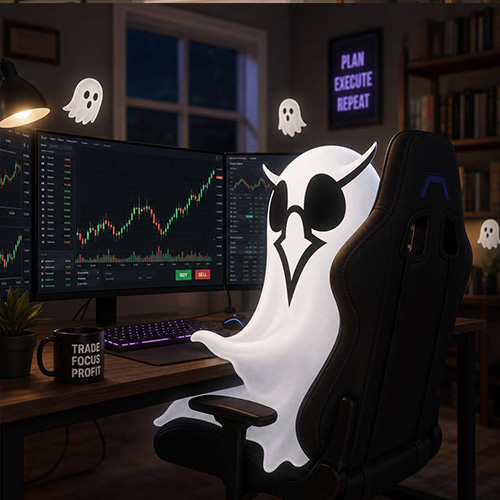
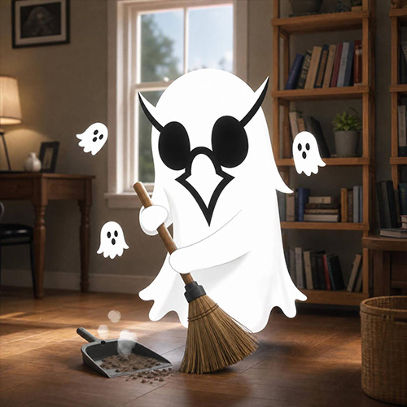
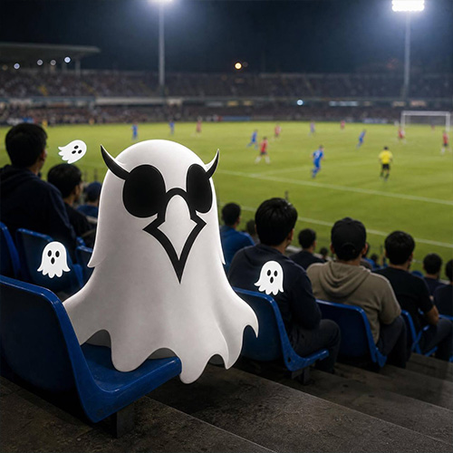
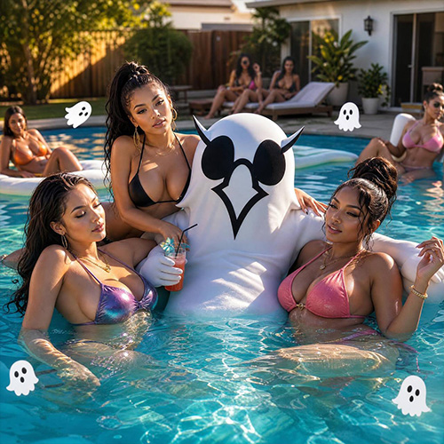
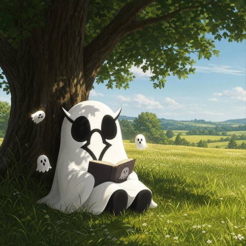
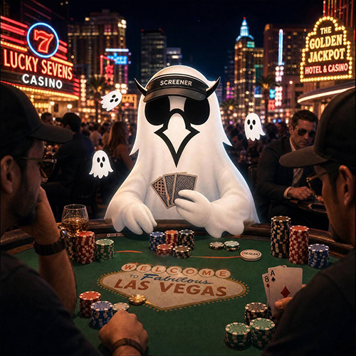
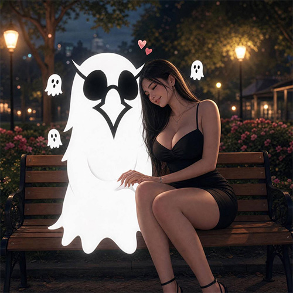
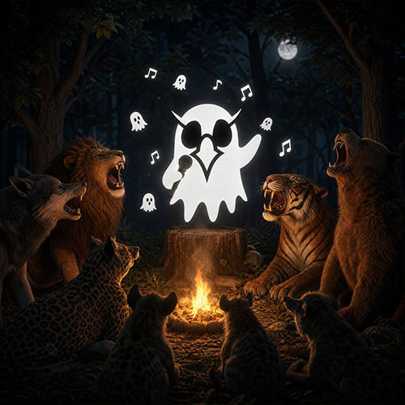
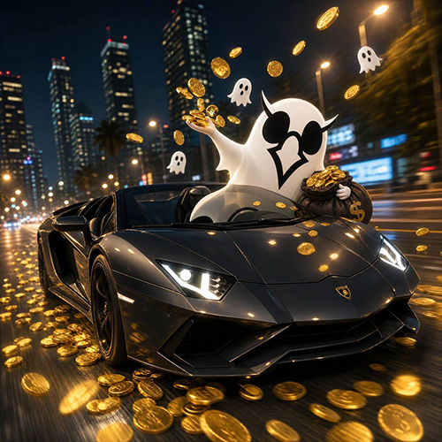
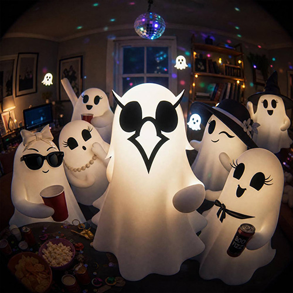
Download Phantom, Solflare, or your favorite Solana wallet. Secure your seed phrase like it's the only map to the next hidden gem. The ghosts are already searching. 👻
Fund your Solana wallet with SOL, then swap for $GHOST on your favorite Solana DEX. Once you're on-chain, the hunt for hidden alpha begins. 👻
Open your favorite Solana DEX, paste the official $GHOST contract address, confirm the swap, and join the ghosts chasing hidden alpha before the crowd catches on. 👻
Confirm the swap and leave a little SOL in your wallet for network fees. Then you're ready to start hunting hidden alpha. Welcome to the hunt. Stay spooky, stay early, and never stop chasing hidden alpha. 👻